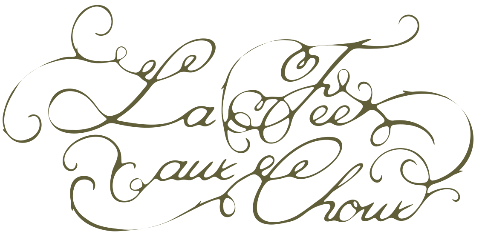

Science-Fiction, Horreur
2024
Elisabeth Sparkle, une ancienne star de cinéma, est brutalement licenciée par son producteur en raison de son âge. Désespérée, elle cède à la tentation et s'injecte « The Substance ». Cependant, ce serum a des effets secondaires monstrueux et destructeurs.
La Fée aux Choux est un projet mené par Laura Senrens et Pauline Bouillevart, étudiantes en 5e année à l'École d'art et de communication de Cambrai. Fondé au début de l'année scolaire 2026, il a pour but de mettre en lumière le cinéma féministe au sein de l'école d'art.
Pour toute sollicitation, veuillez nous contacter par mail.